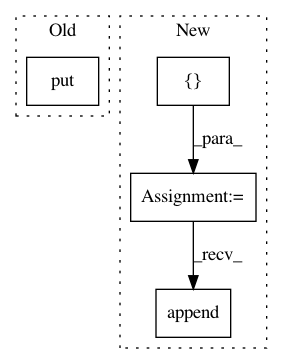

4a87f3b65125fb105168e4ff3f9aff3edfb9ab58,nilmtk/tests/generate_test_data.py,,create_energy_hdf5,#Any#,132
Before Change
key = "building1/electric/meter2"
print("Saving", key)
store.put(key, df, format="table")
store.get_storer(key).attrs.metadata = {
"instance": 2,
"building": 1,
"dataset": "REDD",
After Change
store = pd.HDFStore(FILENAME, "w", complevel=9, complib="bzip2")
elec_meter_metadata = []
// Save sensor data
for meter_i in [1,2,3]:
key = "building1/electric/sensor{:d}".format(meter_i)
print("Saving", key)
store.put(key, df, format="table")
meta = {
"instance": meter_i,
"building": 1,
"dataset": "REDD",
"device_model": meter_device["model"],
"sensors": [{"data_location": key}]
}
additional_meta = {
1: {"site_meter": True},
2: {"submeter_of": 1},
3: {"submeter_of": 2}
}
meta.update(additional_meta[meter_i])
elec_meter_metadata.append(meta)
// Save dataset-wide metadata
store.root._v_attrs.metadata = {"meter_devices": {meter_device["model"]: meter_device}}
In pattern: SUPERPATTERN
Frequency: 3
Non-data size: 4
Instances
Project Name: nilmtk/nilmtk
Commit Name: 4a87f3b65125fb105168e4ff3f9aff3edfb9ab58
Time: 2014-05-21
Author: jack-list@xlk.org.uk
File Name: nilmtk/tests/generate_test_data.py
Class Name:
Method Name: create_energy_hdf5
Project Name: calico/basenji
Commit Name: 8cae9860b1ae048c3bed91e1c5014583c20e1380
Time: 2018-10-18
Author: drk@calicolabs.com
File Name: bin/basenji_train2.py
Class Name:
Method Name: run
Project Name: deeptools/HiCExplorer
Commit Name: 0658bd03da94118ebd35d5173c93f5e3276ceeec
Time: 2019-03-14
Author: wolffj@informatik.uni-freiburg.de
File Name: hicexplorer/chicViewpoint.py
Class Name:
Method Name: compute_viewpoint